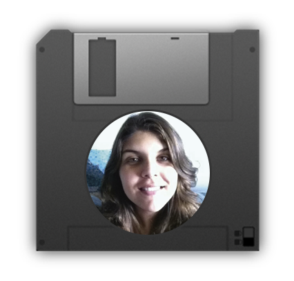
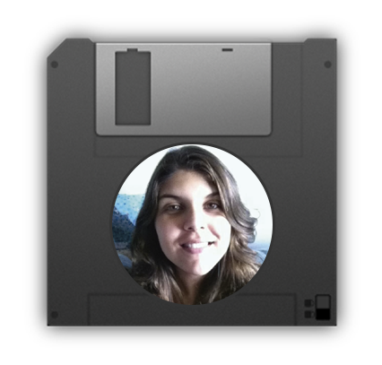

My name is Luiza Franca. I`m 22 years old and I`m from Brazil. I`m currently a student at KEA-Copenhagen School of Design and Technology. My passions are Graphic Design and Visual Communication. I hope to be a great professional in Design, with a great background and network, and I`ll work hard to reach my goals.
2014-2018 Student at Pontifical Catholic University (PUC-Rio)
2015-2016 Itern in the UNESCO Chair of Reading (PUC-Rio)
2014-2015 Itern in the Social Sciences department (PUC-Rio)